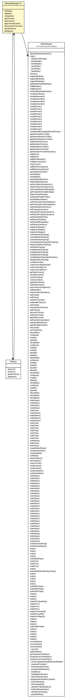

org.vorpal.blade.framework.config
Class SettingsManager<T>

java.lang.Object
 org.vorpal.blade.framework.config.SettingsManager<T>
org.vorpal.blade.framework.config.SettingsManager<T>
public class SettingsManager<T>
- extends java.lang.Object
|
Constructor Summary |
SettingsManager(javax.servlet.sip.SipServletContextEvent event,
java.lang.Class<T> clazz)
|
| Methods inherited from class java.lang.Object |
clone, equals, finalize, getClass, hashCode, notify, notifyAll, toString, wait, wait, wait |
current
protected T current
objectName
protected javax.management.ObjectName objectName
servletContextName
protected java.lang.String servletContextName
server
protected javax.management.MBeanServer server
filename
public java.lang.String filename
sampleFilename
public java.lang.String sampleFilename
schemaFilename
public java.lang.String schemaFilename
directory
public java.lang.String directory
mapper
protected com.fasterxml.jackson.databind.ObjectMapper mapper
clazz
protected java.lang.Class<T> clazz
oi
protected javax.management.ObjectInstance oi
settings
protected Settings settings
sipFactory
public static javax.servlet.sip.SipFactory sipFactory
sipLogger
public static Logger sipLogger
SettingsManager
public SettingsManager(javax.servlet.sip.SipServletContextEvent event,
java.lang.Class<T> clazz)
initialize
public void initialize(T config)
throws javax.servlet.sip.ServletParseException
- This method is intended to be overridden to allow configurations that require
additional work before they are ready to use.
- Throws:
javax.servlet.sip.ServletParseException
register
public void register()
throws javax.management.InstanceAlreadyExistsException,
javax.management.MBeanRegistrationException,
javax.management.NotCompliantMBeanException,
com.fasterxml.jackson.core.JsonGenerationException,
com.fasterxml.jackson.databind.JsonMappingException,
java.lang.InstantiationException,
java.lang.IllegalAccessException,
java.io.IOException,
javax.servlet.sip.ServletParseException
- Throws:
javax.management.InstanceAlreadyExistsException
javax.management.MBeanRegistrationException
javax.management.NotCompliantMBeanException
com.fasterxml.jackson.core.JsonGenerationException
com.fasterxml.jackson.databind.JsonMappingException
java.lang.InstantiationException
java.lang.IllegalAccessException
java.io.IOException
javax.servlet.sip.ServletParseException
unregister
public void unregister()
throws javax.management.MBeanRegistrationException,
javax.management.InstanceNotFoundException
- Throws:
javax.management.MBeanRegistrationException
javax.management.InstanceNotFoundException
getCurrent
public T getCurrent()
- Returns:
- the current
setCurrent
public void setCurrent(T current)
- Parameters:
current - the current to set
getCurrentAsJson
public java.lang.String getCurrentAsJson()
setCurrentFromJson
public void setCurrentFromJson(java.lang.String json)
getJSchema
public java.lang.String getJSchema()
getName
public java.lang.String getName()
Copyright © 2013-2021 Vorpal Networks, LLC. All Rights Reserved.